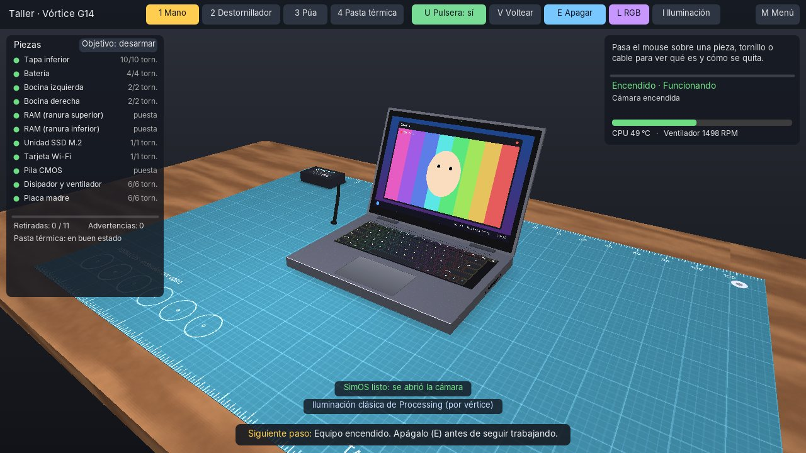
Manual de usuario
Taller de computadoras en 3D: desarma, arma y enciende 8 equipos pieza por pieza
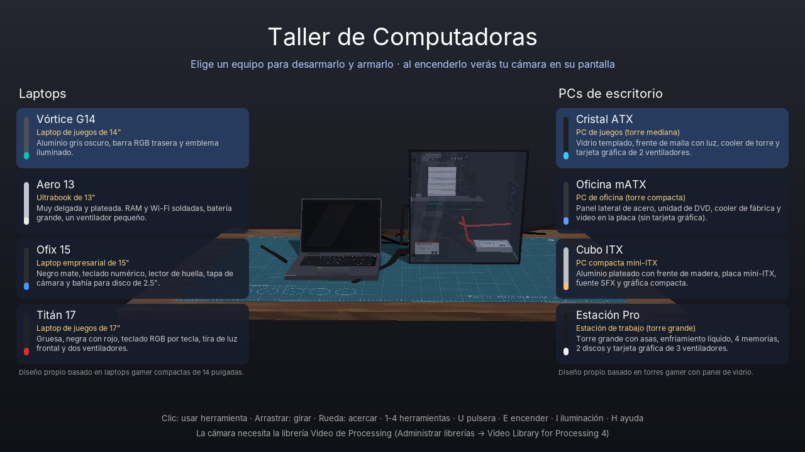
Versión 2.0 · noviembre de 2026
Es un taller virtual en 3D para aprender cómo están hechas las computadoras por dentro. Eliges una laptop o una PC de escritorio y la desarmas como lo haría un técnico: quitas tornillos con el destornillador, liberas clips con la púa, desconectas cables y retiras cada pieza en el orden correcto. Después la vuelves a armar, la enciendes y compruebas si arranca. Si todo quedó bien, la pantalla del equipo muestra la imagen de tu cámara web.
La meta es terminar con 0 advertencias y el equipo funcionando.
| Elemento | Mínimo | Recomendado |
|---|---|---|
| Sistema operativo | Windows 10, macOS 12 o Linux de 64 bits | Windows 11 / macOS 14 |
| Procesador | Doble núcleo 2 GHz | Cuatro núcleos |
| Memoria RAM | 4 GB | 8 GB |
| Tarjeta de video | OpenGL 2.1 (iluminación clásica) | OpenGL 3.2 o superior (modo RTX) |
| Pantalla | 1280 × 720 | 1920 × 1080 |
| Software (si usas el código) | Processing 4 y Video Library for Processing 4 | Processing 4.3 o más reciente |
| Opcional | Cámara web y bocinas | — |
windows-amd64), ábrela y haz doble clic en DesarmadoPC.exe (en macOS, DesarmadoPC.app).data, lib y java.DesarmadoPC/DesarmadoPC.pde. Se abren las 13 pestañas juntas.Pasa el mouse sobre una tarjeta para ver el modelo y haz clic para entrar al taller con él. Cada tarjeta indica el tipo de equipo y sus características: RAM soldada, enfriamiento líquido, disco de 2.5", etc. Desde el taller, la tecla M regresa al menú.
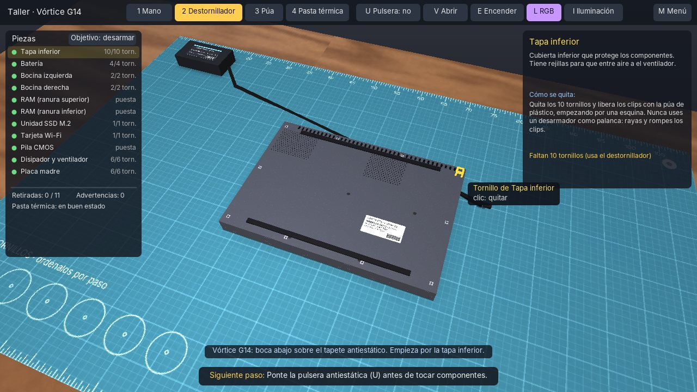
| # | Elemento | Para qué sirve |
|---|---|---|
| 1 | Barra de herramientas | Herramienta activa (resaltada) y botones: pulsera, voltear/abrir, encender, luces RGB, iluminación y menú. Todo tiene atajo de teclado. |
| 2 | Lista de piezas | Estado de cada pieza: verde = puesta, amarillo = le faltan tornillos, gris = en la mesa. Clic en un nombre para enfocarla. |
| 3 | Panel de información | Qué es lo que señalas, cómo se quita y qué falta para quitarlo. Con el equipo encendido muestra el estado, la temperatura y el ventilador. |
| 4 | Objeto resaltado | Lo que está bajo el mouse se marca en amarillo: es lo que recibirá el clic. |
| 5 | Etiqueta | Nombre de lo señalado y la acción del clic (quitar, poner, conectar…). |
| 6 | Resumen | Piezas retiradas, advertencias de seguridad y estado de la pasta térmica. |
| 7 | Mensajes | Avisos de lo que acaba de pasar: verde bien, amarillo advertencia, rojo error. |
| 8 | Siguiente paso | Sugerencia de qué hacer ahora según el orden correcto. |
| Acción | Resultado |
|---|---|
| Clic izquierdo | Usar la herramienta activa en lo que está resaltado |
| Arrastrar (izquierdo o derecho) | Girar la cámara alrededor del equipo |
| Shift + arrastrar o botón central | Desplazar la cámara |
| Rueda | Acercar o alejar |
| Arrastrar en el panel de iluminación | Mover el sol o los deslizadores |
| Tecla | Acción | Tecla | Acción |
|---|---|---|---|
| 1 | Mano | F | Enfocar la pieza del siguiente paso |
| 2 | Destornillador | R | Cámara inicial |
| 3 | Púa de plástico | H | Mostrar u ocultar la ayuda |
| 4 | Pasta térmica | M | Volver al menú |
| U | Pulsera antiestática | L | Efecto de luces RGB (laptops gamer) |
| V | Voltear o abrir la laptop | I | Panel de iluminación |
| E | Encender o apagar | T · O · K | Linterna · luz de aro · lámpara de trabajo |
| X | Iluminación RTX | N | Sonido |
| Esc | Cerrar la ayuda |
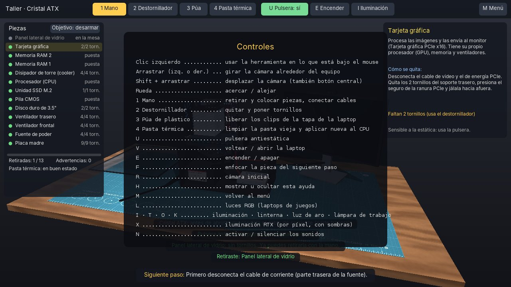
| Herramienta | Tecla | Se usa para |
|---|---|---|
| Mano | 1 | Retirar y colocar piezas, conectar y desconectar cables. |
| Destornillador | 2 | Quitar y poner tornillos, uno por clic. Funciona con tornillos de cualquier pieza visible. |
| Púa de plástico | 3 | Liberar los clips de la tapa inferior de la laptop (después de quitar sus tornillos). |
| Pasta térmica | 4 | Clic en el procesador: el primer clic limpia la pasta vieja y el segundo aplica pasta nueva. |
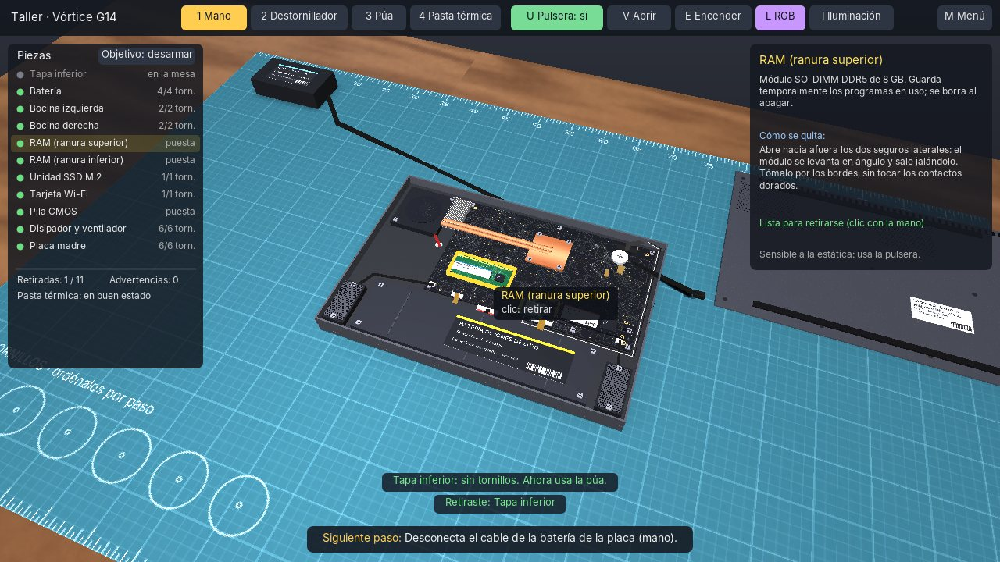
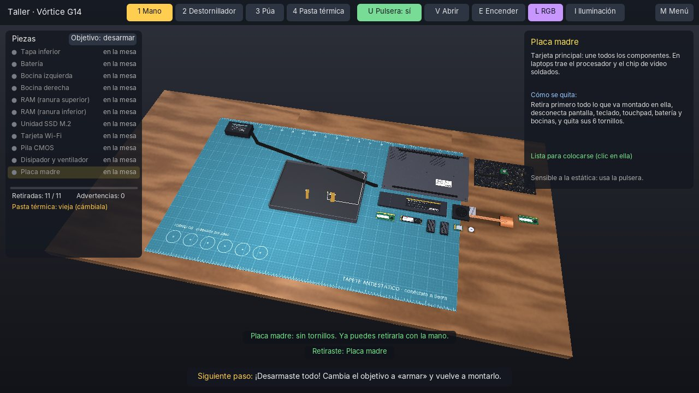
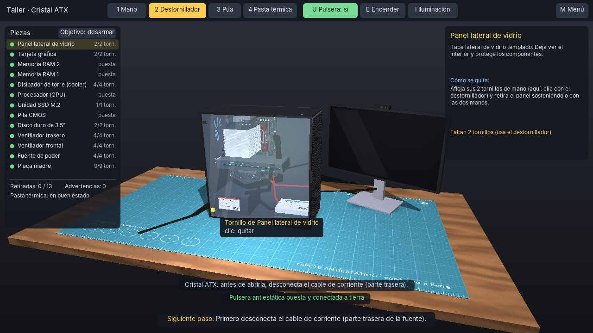
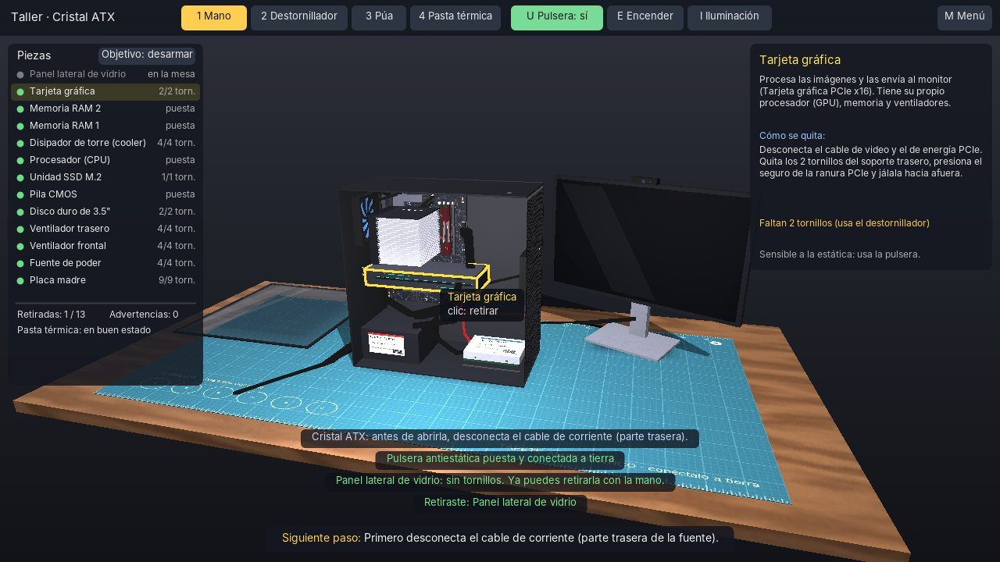
Cambia el objetivo con el botón «Objetivo: desarmar» de la lista de piezas (pasa a «Objetivo: armar»): el «Siguiente paso» te guiará en orden inverso. Cuando todo esté puesto, conecta la corriente (o la batería) y pulsa E.
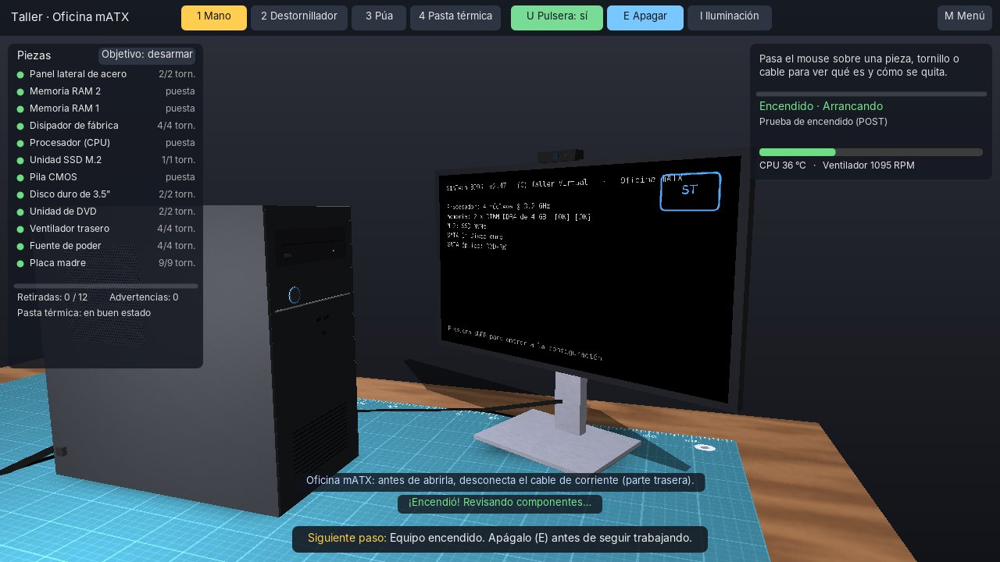
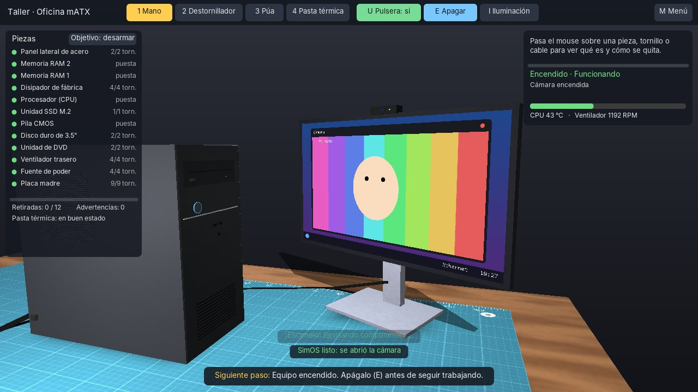
| Lo que ves | Qué significa | Qué hacer |
|---|---|---|
| No enciende | No llega energía | Conecta la corriente, la batería o el cable de la fuente a la placa |
| Enciende, pantalla negra | Falta CPU, RAM o video | Lee el detalle en el panel: indica la pieza o el cable que falta |
| «No se encontró un dispositivo de arranque» | No hay disco | Instala el SSD o el disco y conecta sus cables SATA |
| Temperatura en aumento y «Apagado de emergencia» | Falla el enfriamiento | Revisa disipador, pasta térmica y cable del ventilador |
| SimOS con tu cámara | Todo correcto | ¡Listo! Apaga con E antes de volver a trabajar |
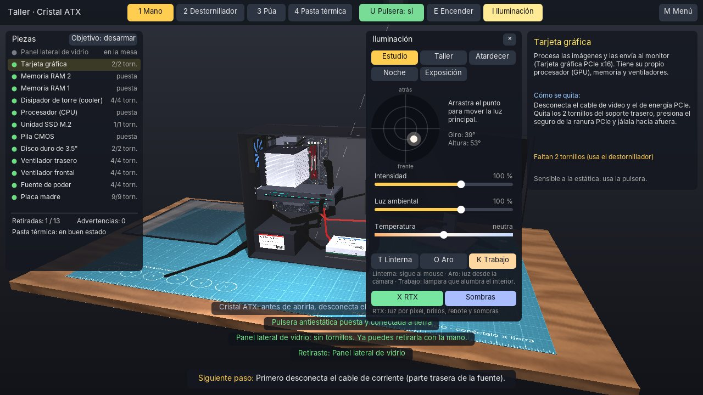
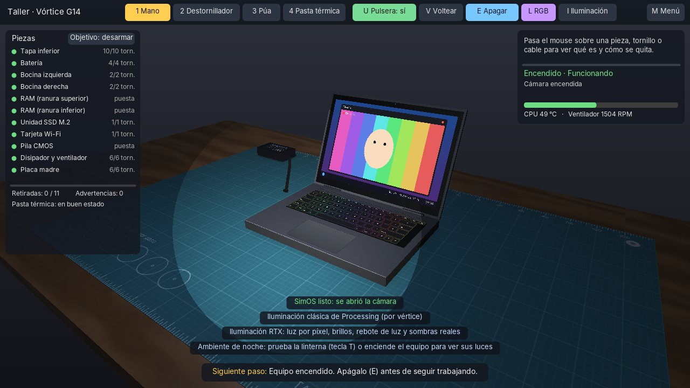

| Equipo | Tipo | Lo que lo distingue |
|---|---|---|
| Vórtice G14 | Laptop de juegos de 14" | Barra RGB trasera y emblema iluminado, teclado RGB |
| Aero 13 | Ultrabook de 13" | RAM y Wi-Fi soldadas, batería grande, un ventilador |
| Ofix 15 | Laptop empresarial de 15" | Teclado numérico, lector de huella, disco de 2.5" |
| Titán 17 | Laptop de juegos de 17" | Tira frontal RGB, luces en la tapa, dos ventiladores |
| Cristal ATX | PC de juegos (torre mediana) | Panel de vidrio, frente de malla con luz, tarjeta gráfica |
| Oficina mATX | PC de oficina compacta | Panel de acero, unidad de DVD, cooler de fábrica |
| Cubo ITX | PC compacta mini-ITX | Frente de madera, fuente SFX, gráfica compacta |
| Estación Pro | Estación de trabajo (torre grande) | Enfriamiento líquido, 4 memorias, 2 discos |
Los 8 equipos son diseños propios inspirados en tipos de equipos comunes; no reproducen productos de ninguna marca.
| Problema | Solución |
|---|---|
| «The package processing.video does not exist» | Instala Video Library for Processing 4 (sección 4, opción B). |
| Aviso «RTX no disponible» | Tu tarjeta no acepta los shaders. El programa sigue con la iluminación clásica; actualiza el controlador de video para usar RTX. |
| La pantalla del equipo no muestra la cámara | Da permiso de cámara a la aplicación y cierra otros programas que la estén usando. |
| No hay sonido | Pulsa N para activarlo y revisa que exista una salida de audio. Si no hay dispositivo, el programa sigue sin sonido. |
| No puedo quitar una pieza | Pasa el mouse sobre ella: el panel de información dice qué falta (tornillos, un cable o una pieza encima). |
| No encuentro un tornillo o cable | Gira la cámara arrastrando el mouse o pulsa F para enfocar el siguiente paso. |
| El equipo se apaga solo | Sobrecalentamiento: revisa el disipador, la pasta térmica y el cable del ventilador. |